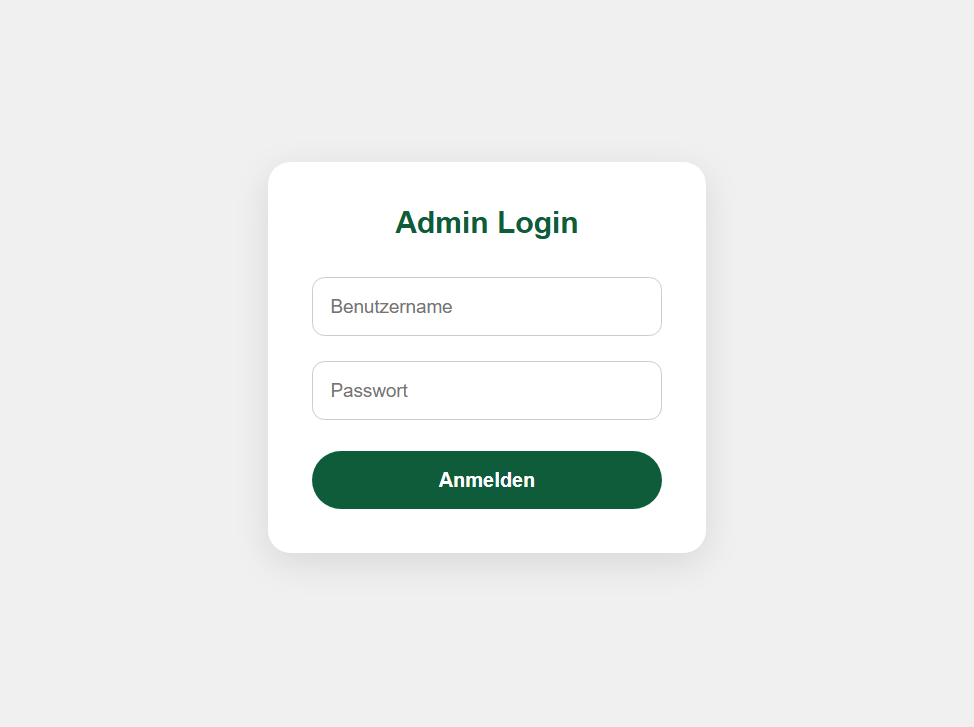

Abdul Ghani Alchaiteh
IT-Entwicklung | Softwareentwicklung | Webanwendungen
Ich entwickle eigene Software- und Webanwendungen mit Python, Flask, HTML, CSS und JavaScript.
Ich suche eine Einstiegsmöglichkeit im IT-Bereich, um meine praktischen Kenntnisse professionell einzusetzen und weiter auszubauen.

Über mich
Ich bin 22 Jahre alt und beschäftige mich intensiv
mit Softwareentwicklung, Webentwicklung und modernen
IT-Lösungen.
Durch eigene Projekte habe ich praktische Erfahrungen
mit Python, Flask, Datenbanken, GitHub, APIs und
Deployment gesammelt.
Ich entwickle eigene Anwendungen und erweitere
kontinuierlich meine Kenntnisse in Bereichen wie
Automatisierung und künstlicher Intelligenz.
Mein Ziel ist es, meine Fähigkeiten in einem
professionellen IT-Umfeld einzusetzen und mich
langfristig im Bereich Softwareentwicklung
weiterzuentwickeln.
Meine Fähigkeiten
Programmierung & Entwicklung
- HTML
- CSS
- JavaScript
- Python
- Flask
- SQLite Datenbanken
- REST API Grundlagen
- Git & GitHub
- Responsive Webdesign
- Deployment mit Render
Technisches Interesse
- Softwareentwicklung
- Webentwicklung
- Automatisierung
- Künstliche Intelligenz
- IT-Systeme
- Digitale Lösungen
Meine Projekte

KI-Assistent – Webanwendung
Entwicklung eines eigenen KI-Assistenten
mit Python und Flask.
Das Projekt wurde von einer lokalen Anwendung
zu einer öffentlich erreichbaren Webanwendung
weiterentwickelt.
- Python & Flask Backend
- HTML, CSS und JavaScript Frontend
- Wissensdatenbank
- API-Kommunikation
- GitHub Versionsverwaltung
- Deployment über Render
Technologien: Python, Flask, HTML, CSS, JavaScript, GitHub, Render


Online-Buchungssystem – Webanwendung
Entwicklung eines digitalen Systems zur
Online-Terminverwaltung.
Die Anwendung beinhaltet eine Benutzeroberfläche,
Datenverwaltung und einen eigenen Admin-Bereich.
- Online-Terminbuchung
- Administrationsbereich
- Datenbankanbindung
- Python Flask Backend
- Frontend Entwicklung
- Deployment über Render
Technologien: Python, Flask, HTML, CSS, JavaScript, SQLite, GitHub

Webseitenentwicklung
Entwicklung eigener Webseitenprojekte mit Fokus auf modernes Design, Struktur und Benutzerfreundlichkeit.
- Responsive Webseiten
- HTML & CSS Entwicklung
- JavaScript Grundlagen
- Modernes Webdesign
Praktische IT-Erfahrung
Durch meine eigenen Softwareprojekte konnte ich praktische Erfahrungen in der Entwicklung und Bereitstellung von Anwendungen sammeln.
- Planung und Umsetzung eigener Projekte
- Programmierung mit Python und Flask
- Frontend- und Backend-Entwicklung
- Arbeiten mit GitHub
- Fehleranalyse und Weiterentwicklung
- Deployment von Anwendungen
Berufliches Ziel
Ich suche eine Möglichkeit, meine praktischen
IT-Kenntnisse in einem Unternehmen einzusetzen.
Dabei bin ich offen für einen direkten Einstieg
als IT-Mitarbeiter sowie für eine Ausbildung zum
Fachinformatiker für Anwendungsentwicklung.
Besonders interessiere ich mich für
Softwareentwicklung, Webanwendungen und
digitale Lösungen.
Lebenslauf
Hier können Sie meinen aktuellen Lebenslauf als PDF herunterladen.
Lebenslauf herunterladenKontakt
Abdul Ghani Alchaiteh
Chemnitz, Deutschland
📧 E-Mail:
abdoalchaiteh01@icloud.com
💻 GitHub:
github.com/AGA-01
🔗 LinkedIn:
Abdul Ghani Alchaiteh